長期トレンド
JKMとJEPXシステムプライスの推移グラフ
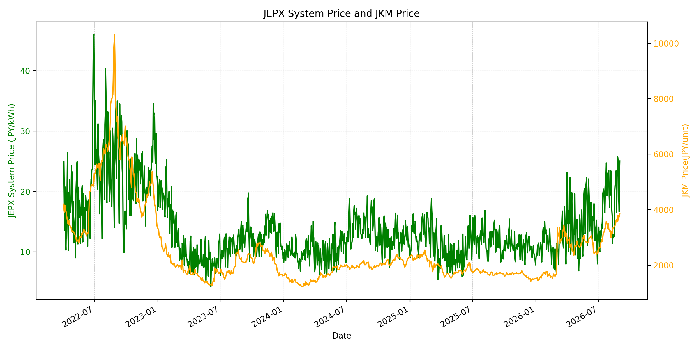
WTIの推移グラフ
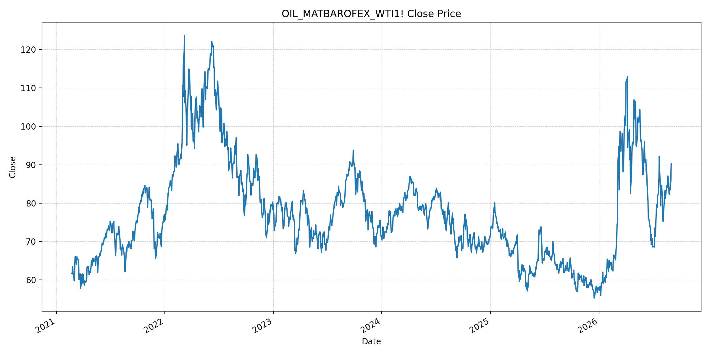
JEPXエリアプライスグラフ（直近一年分）
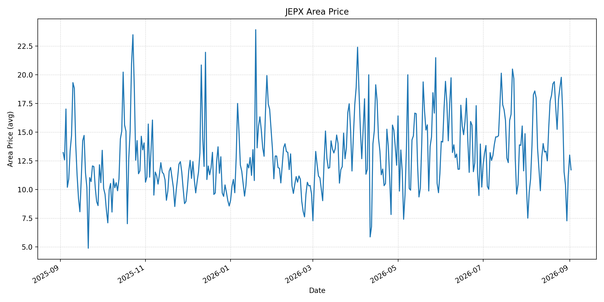
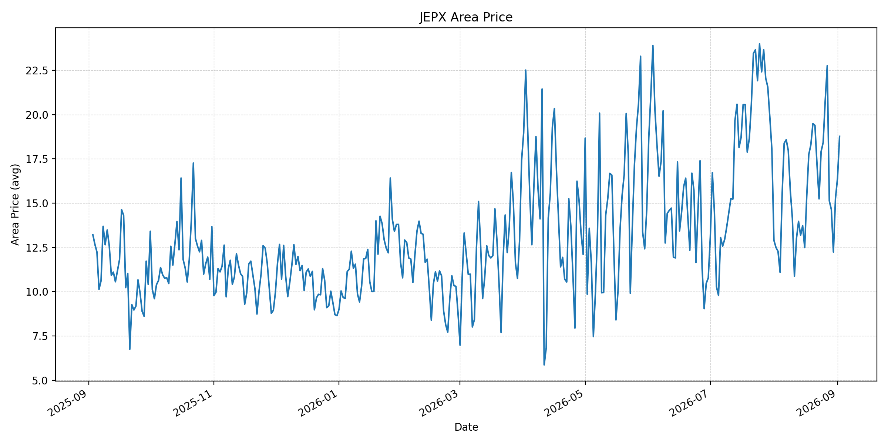
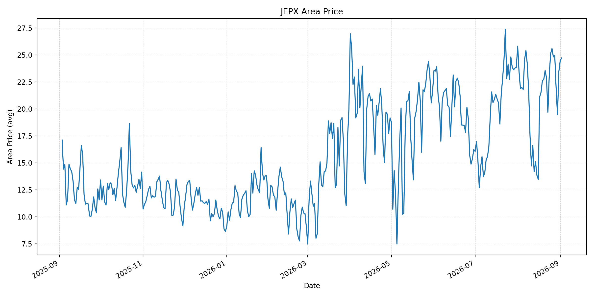
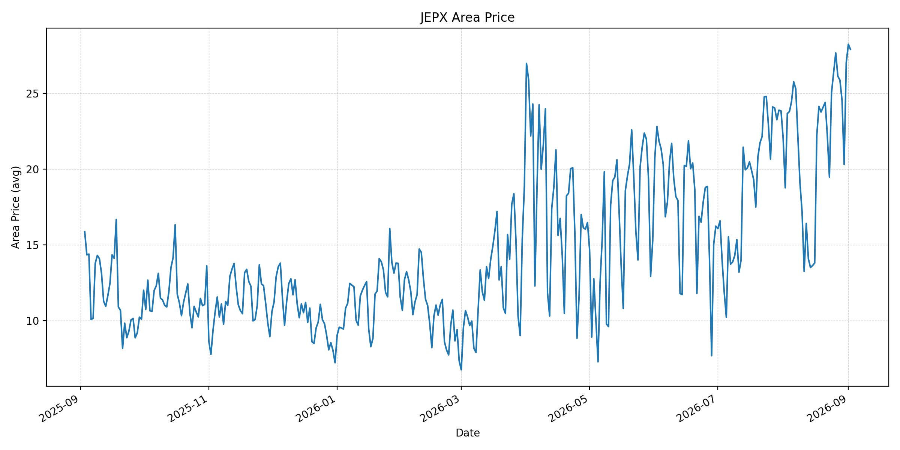
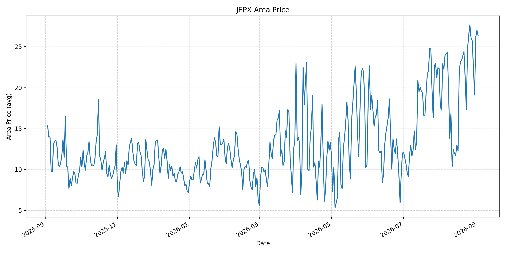
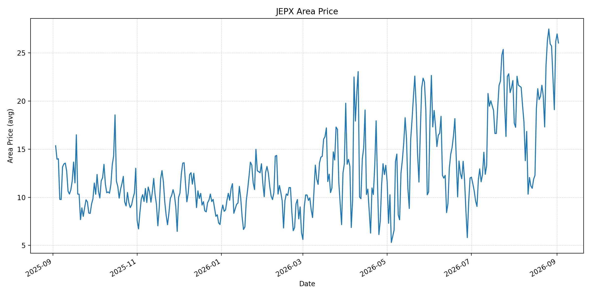
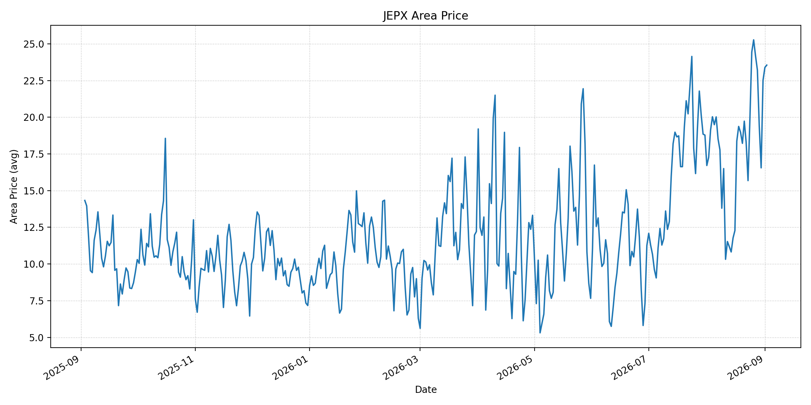
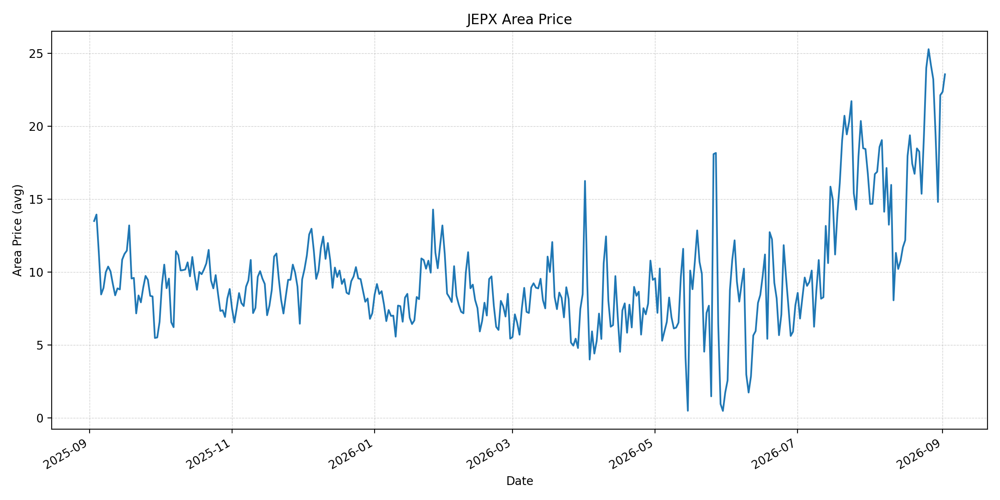
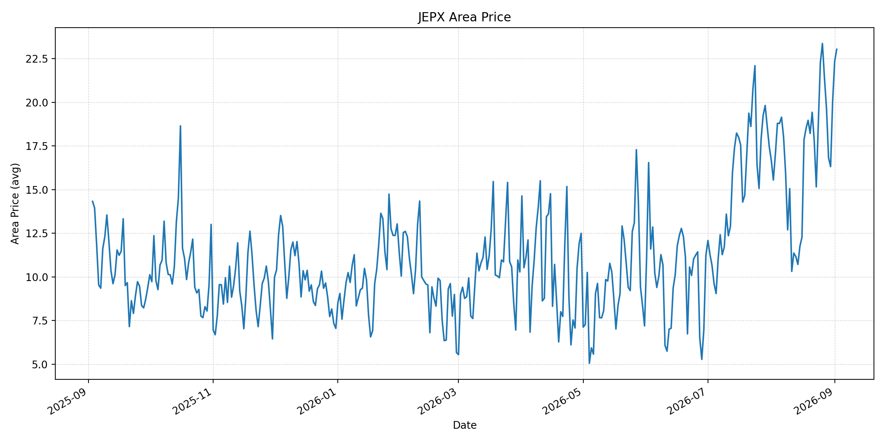
短期トレンド
JKMとJEPXシステムプライスの推移グラフ
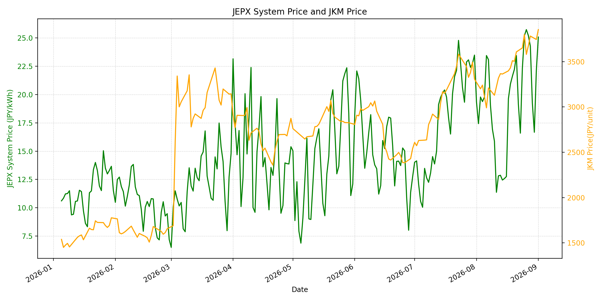
WTIの推移グラフ
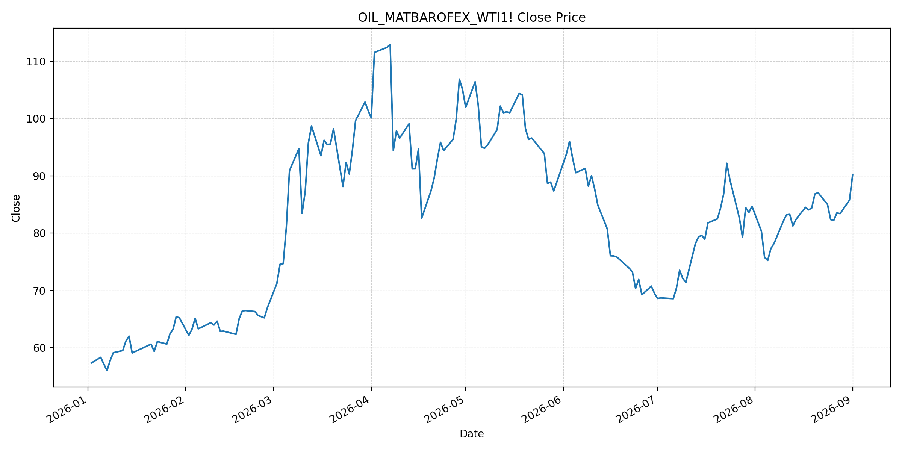
JEPXシステムプライス
最新値は 2026-09-02 分、先週終値は 2026-08-26、先月終値は 2026-08-31 時点の直近値です。
| エリア | 当日価格 | 前日価格 | 前日比（％） | 先週終値 | 先週比（％） | 先月終値 | 先月比（％） | 過去最高値 | 最高値比（％） |
|---|---|---|---|---|---|---|---|---|---|
| システム | 25.15 | 25.07 | 0.32 | 25.73 | -2.25 | 22.10 | 13.80 | 64.06 | -60.74 |
| 北海道 | 11.71 | 13.00 | -9.92 | 19.77 | -40.77 | 11.18 | 4.74 | 73.92 | -84.16 |
| 東北 | 18.77 | 16.41 | 14.38 | 20.78 | -9.67 | 15.25 | 23.08 | 84.92 | -77.90 |
| 東京 | 24.71 | 24.48 | 0.94 | 25.59 | -3.44 | 23.47 | 5.28 | 86.13 | -71.31 |
| 中部 | 27.89 | 28.23 | -1.20 | 27.66 | 0.83 | 27.01 | 3.26 | 52.06 | -46.43 |
| 北陸 | 26.32 | 27.00 | -2.52 | 27.66 | -4.84 | 26.18 | 0.53 | 46.48 | -43.38 |
| 関西 | 26.03 | 26.97 | -3.49 | 27.48 | -5.28 | 26.17 | -0.53 | 46.48 | -44.00 |
| 中国 | 23.55 | 23.39 | 0.68 | 25.27 | -6.81 | 22.51 | 4.62 | 46.48 | -49.34 |
| 四国 | 23.55 | 22.35 | 5.37 | 25.27 | -6.81 | 22.12 | 6.46 | 46.48 | -49.34 |
| 九州 | 23.04 | 22.36 | 3.04 | 23.37 | -1.41 | 20.06 | 14.86 | 40.54 | -43.17 |
LNG先物価格
最新値は 2026-09-01 の LNG(close) です。先週終値は 2026-08-25、先月終値は 2026-08-31 時点の直近値です。
| 当日価格 | 前日価格 | 前日比（％） | 先週終値 | 先週比（％） | 先月終値 | 先月比（％） | 過去最高値 | 最高値比（％） |
|---|---|---|---|---|---|---|---|---|
| 3853.00 | 3744.00 | 2.91 | 3800.00 | 1.39 | 3744.00 | 2.91 | 10319.00 | -62.66 |
石油先物価格
最新値は 2026-09-01 の OIL(close) です。先週終値は 2026-08-25、先月終値は 2026-08-31 時点の直近値です。
| 当日価格 | 前日価格 | 前日比（％） | 先週終値 | 先週比（％） | 先月終値 | 先月比（％） | 過去最高値 | 最高値比（％） |
|---|---|---|---|---|---|---|---|---|
| 90.22 | 85.76 | 5.20 | 82.36 | 9.54 | 85.76 | 5.20 | 123.70 | -27.07 |
ニュース
イラン情勢に関するニュース
- 9月1日、米軍はイラン国内の標的を追加攻撃し、イランは地域の複数地点へミサイルと無人機で応答しました。ホルムズ海峡を巡る軍事的緊張が再燃しています。参照: AP, 2026-09-01
- 米軍は商業船舶と駐留米軍への革命防衛隊の攻撃企図を追加攻撃の理由と説明しており、安全事案の増加が物流の不確実性を高めています。参照: AP, 2026-09-01
ホルムズ海峡経由の石油・LNGに関するニュース
- 9月1日夜、海峡を出たサウジ原油タンカー2隻への攻撃報道と軍事行動再開を受け、WTIは5週ぶりの高値まで上昇しました。参照: Reuters, 2026-09-02
- イランの原油は、米海上封鎖の下で約7週間にわたり海峡経由の有意味な輸出がない状態と報じられています。8月の積み込み量は日量22万〜25.5万バレルで、7月の日量約74万バレルを下回りました。参照: Reuters, 2026-09-01
ホルムズ海峡経由でない石油・LNGに関するニュース
- 過去24時間で、ホルムズ海峡を経由しないLNG供給量を直接変更する主要な新規公表は確認できませんでした。
- 日本は中東の迂回パイプライン支援と調達多様化を含む供給強靭化策を進める方針であり、海峡依存を下げる中長期策として注目されます。参照: Reuters, 2026-08-26
日本国内のイラン戦争に関係するニュース
- 過去24時間で、JEPX制度または国内電力需給ルールを直接変更する主要な新規公表は確認できませんでした。
- 政府の供給強靭化策は、ホルムズ回避の輸送インフラ活用と調達先多様化を含み、具体策は年内の制度化を見込んでいます。参照: Reuters, 2026-08-26
インサイト
ニュース事項による日本の電力市場への影響（短期：数日〜1週間）
- JEPXシステムは 25.15 円/kWhで前日比 0.32%、先週比 -2.25% です。東北は前日比 14.38%、四国は 5.37% と上昇しており、エリア別の需給差が表れています。
- LNGは 3853.00 で前日比 2.91%、WTIは 90.22 ドルで前日比 5.20% です。タンカー攻撃と軍事行動再開は、国内の次の燃料調達・電力取引に上振れリスクをもたらします。
- 数日から1週間では、海峡の安全事案、通航量、仲介協議の進展を日次で確認する必要があります。JEPXは燃料市況に加え、気温、需要、連系制約で変動します。
ニュース事項による日本の電力市場への影響（長期：1ヶ月〜半年）
- システム価格は先月比 13.80%、LNGは 2.91%、WTIは 5.20% です。燃料高が定着すれば、火力の限界費用を通じて卸電力価格を押し上げる可能性があります。
- 九州は先月比 14.86%、東北 23.08%、四国 6.46% と上昇しています。燃料要因と各エリアの需給要因を分けて確認する必要があります。
- 迂回パイプラインと調達多様化は途絶リスクを低減し得ますが、実際の物流能力、調達契約、稼働時期は別途検証が必要です。システム価格、LNG、WTIはいずれも過去最高値を下回っており、短期的なリスクプレミアムと長期的な供給制約を分けて評価します。